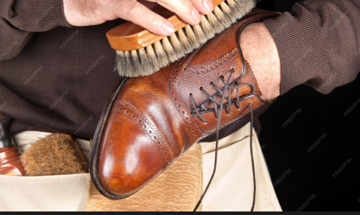

El Arte del Cuidado del Calzado
El cuidado minucioso de los zapatos se convierte en una rutina agradable para su propietario, siempre y cuando disponga de un equipo adecuado y siga un orden correcto en la limpieza. Mantener los zapatos en buen estado no solo alarga su vida útil, sino que también resalta su verdadera elegancia.
Equipo básico
- Cepillo para quitar barro (cerdas de caballo, cerdo o buey).
- Cepillos de fibras de pita.
- Cepillos de aplicación para cada color de betún.
- Gamuza o cepillo de dientes como alternativa.
No se deben mezclar colores en un mismo cepillo para evitar irregularidades.
Productos de limpieza
Los productos deben coincidir con el color exacto del calzado:
- Burdeos para tonos rojos.
- Marrón claro u oscuro para tonos coñac.
- Betún negro para dar un acabado envejecido.
Se aplica una capa fina y se deja reposar 10 minutos antes de pulir.
10 reglas para el cuidado
- Usar zapatos nuevos solo 2-3 horas al inicio.
- No usar el mismo par dos días seguidos.
- Utilizar calzador siempre.
- Aflojar cordones antes de descalzar.
- Colocar horma extendedora tras cada uso.
- Si se mojan, horma y secado lateral por 24h.
- Cepillar después de cada uso.
- Si no se usan, aplicar betún y guardar en caja.
- No prestar zapatos hechos a medida.
- La verdadera belleza se aprecia en la ocasión adecuada.
Cuidar los zapatos no solo es un gesto de elegancia, sino también de respeto por un accesorio que refleja estilo, tradición y personalidad.